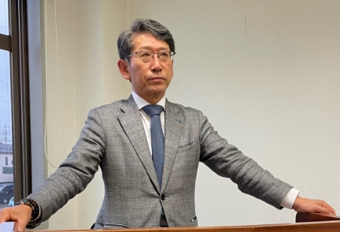
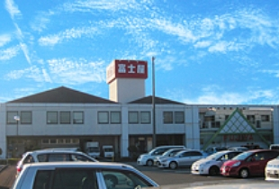

会社案内
社長ご挨拶
- 
-
「地元と共に発展する企業として、
多くのお客様から喜ばれる
スーパーマーケットでありたい！」
お蔭様で当社は創業より60年を数えるスーパーマーケットであります。
正にご愛顧下さるお客様、ご支援下さるお取引先様のおかげと、深く感謝申し上げます。
私共の役割は、日々の食卓応援であり、常に地元のお客様に支えられ、“地域を共に”を念頭に、地域の文化・生活の発展向上に少しでも寄与出来ればと考える次第です。
又、進むべき方向として“感じの良い店づくり”を実践する為、お客様が来店されて良かったと思って頂けるよう、店舗の広い方を環境に合わせて変化する工夫を最大限に進めて参りたいと思います。
又、当社創業よりの理念である“より良い品をより安く”は、根底に流れる消費生活を、少しでも豊かにしたい、より楽しい食生活を日々過ごして頂きたいという願いの歴史でもあります。
環境変化が厳しい昨今だからこそ、全ての従業員がその課題をよく理解し、自ら「考え」、問題解決の為に取り組んでいかなければなりません。
一人一人が与えられた役割の中、自ら進んで知恵を出し、工夫を重ねて厳しい環境でも前向きに進んでいく人を応援する企業でもありたいと思います。
環境が厳しいからこそ、私たちの役割（ライフラインを守る使命）は大事となります。
お客様から喜ばれるお店となるよう成長して参りたいと思います。
皆様からの変わらぬご支援の程、宜しくお願い申し上げます。
代表取締役社長 木村明正
企業理念
- 
-
富⼠屋は常に地域に密着したサービスを展開し、⽣鮮⾷品を中⼼に
「より良い品」を「より安く」をモットーに消費者に⽀持される店作りを⽬指して
⽇々努めております。
単にモノを売るだけでなく、⽣活⽂化を提案するスーパーマーケットとして成⻑しています。
お役に立って幸せです。お客様のお役に立って幸せです。社会のお役に立って幸せです。社員のお役に立って幸せです。
毎日の食卓に必要な新鮮な食材を提供するスーパーマーケットは、現代社会の生活に不可欠な存在です。昨今の流通業界は、大型店、専門店、コンビニエンスストア、通信販売など多様化が進んでいます。しかしどんなに多様化が進もうと、日々の食生活にもっとも深く関わっているのは、常に地域に密着したサービスを提供しているスーパーマーケットです。
富士屋は静岡県中部地区を中心に８店舗を展開。各地域の特性を熟慮し、各地域のお客様のニーズに合う個性的な店舗、サービスを展開しています。そして高度なマーチャンダイジングのノウハウを生かし、経営、商品、サービスのあらゆる面で、ベストコンディションでお客様のニーズにお応えできるよう、努力を重ねています。
現代は、私たちの食生活をとりまく環境は大きな転換を迎えています。手軽さ、便利さの重視の時代から、産地、添加物、環境問題など健康や安全を考慮し、食生活の本質を見直す時代へと。それらの変化をいち早くキャッチし、適切に対応していくことが、私たちスーパーマーケットの使命です。そのために、「売る、作る立場」から「使う、買う」立場へと意識をシフトし、お客様の気持ちになって商品、サービスを考えることを何よりも重視しています。毎日の食材の販売に特別な仕掛けは不要です。お客様に、毎日心地よくお買物をしていただくためには、店、商品、スタッフのサービス、すべてにおいて新鮮さ、豊かさ、正確さが必要です。地域のお客様のライフスタイルに自然に溶け込み、日々新鮮なおいしさと情報を提案できる身近なスーパーマーケットとして、富士屋はこれからも前進を続けていきます。
環境への取り組み
環境自主行動計画
基本理念
-
お客様・従業員と共に、環境負担の少ない地域社会の構築を目指します。
基本方針
-
- １.省資源、省エネルギーの取り組みを積極的に行います。
- ２.全社従業員を挙げて環境意識向上を目指します。
行動計画
-
環境負荷の低減・CO2排出量１％抑制を目指すことを行動計画の指針とする。
年間実施項目
-
- ●フードバンクに登録（焼津地区）し、お客様とともに食品資源の有効利用に努める。
- ●富士山クリーンプロジェクト（10月）へお客様とともに参加。
- ●デマンドコントロールにより、全店の毎月の電力使用量を抑える。
- ●毎年6月、全店の冷蔵ケースハニカム清掃を実施。
- ●地球温暖化対策への取り組み オフィス内の冷房温度適正化（室温28℃）を実施。
過去の取り組み
-
- ● 2010年10月焼津三丁目店を高効率店舗としての位置づけで出店。
（オール電化・オールLED・太陽光パネル） - ● 2014年09月静岡中田店に高効率冷蔵・冷凍ショーケース、冷凍機を導入。
- ● 2015年09月藤枝五十海店に高効率冷蔵・冷凍ショーケースを導入。
- ● 2016年11月藤枝高洲店に高効率冷蔵・冷凍ショーケース・冷凍機を導入。
- ● 2016年11月省エネルギーオンラインコンサルタント導入により店全体の電力量を管理。
- ● 2017年11月静岡瀬名店に高効率冷蔵・冷凍ショーケース・冷凍機を導入。
- ● 2010年10月焼津三丁目店を高効率店舗としての位置づけで出店。
ひとに、地球にやさしいお店づくり
-
太陽光発電設備(焼津三丁⽬店)
環境にやさしい発電システムを
取り⼊れています。
-
オール電化店(焼津三丁⽬店)
オール電化で、環境にやさしい！
安全⾯もしっかり確保
-
ＬＥＤ照明設備
消費電⼒の少ないＬＥＤ照明設備の
採⽤を進めております。

-
スカスカ包材の撲滅運動・
トレーの削減精⾁コーナーでは、CO2削減のために
「エコトレー」を採⽤しております。
-
リサイクル活動
使⽤済みトレー・ペットボトル・
⽜乳パックを回収しております。
-
レジ袋削減
マイバッグ持参を推進
しております。
 会社概要
会社概要
| 企業名 | 株式会社 富士屋 |
|---|---|
| 事業内容 | 総合食料品小売販売（スーパーマーケット） |
| 設立 | 1962年 |
| 資本金 | 5,000万円 |
| 売上高 | 124億円(2022年2月末実績) |
| 代表取締役社長 | 木村 明正 |
| 従業員数 | 全体460人（2022年2月末実績） |
| 本社所在地 | 〒425-0091 静岡県焼津市八楠4-9-8 / TEL：054-629-4611 |
| 事業所 | 焼津市を中心に藤枝市、静岡市に8店舗 |
| 関連会社 | 株）いちまる、（株）焼津冷凍、 （株）松友水産、（株）いちまるホーミング |
| お問い合わせ | 静岡県焼津市八楠4－9－8 TEL.054-629-4611 （Eメール：honbu-b@4919228.com） |
関連会社
富士屋は、水産事業、エネルギー事業、食品加工業で地域をリードするいちまるグループの一員です。
核となる「いちまる」を中心に「焼津冷凍」、「松友水産」、「ウインウイン」、「いちまるホーミング」、そして富士屋で構成されるグループネットワークは、業種業態の枠を超え各々の事業の可能性を広げています。
例えば焼津冷凍で生産されている水耕栽培の野菜は、スーパーマーケット富士屋の人気商品となっており、松友水産の仲卸業は、同じくスーパーマケット富士屋に新鮮な商品を仕入れる際の重要なルートとなっています。
新しいビジネスチャンスの開拓や、新しい商品、サービスの企画において、このグループネットワークは大きな力を発揮しています。創業から60年(令和4年現在)を経て、地域社会に深く関わっている信頼の「いちまる」ブランドを、より大きく確かなブランドに育てるために富士屋はグループを牽引する役割を担っています。
沿革
- 1962年08月会社設立
- 1972年04月静岡瀬名店開店
- 1972年09月静岡中田店開店
- 1976年11月焼津南店開店、売上50億円突破
- 1978年11月焼津東名店開店、本部事務所完成
- 1980年売上100億円突破
- 1983年03月焼津東名店POS導入
- 1983年05月藤枝五十海店開店POS導入
- 1995年07月藤枝高洲店開店
- 2000年12月焼津田尻北店開店
- 2010年10月焼津三丁目店開店
- 2011年11月焼津南店改装
- 2014年09月静岡中田店改装
- 2015年09月藤枝五十海店改装
- 2016年10月藤枝高洲店改装
- 2017年06月焼津東名店改装
- 2017年10月静岡瀬名店改装
- 2018年06月焼津南店改装
- 2021年02月静岡中田店改装
- 2021年06月焼津東名店改装
- 2021年11月焼津三丁目店改装